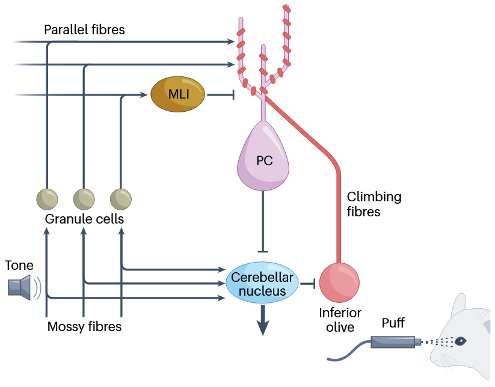
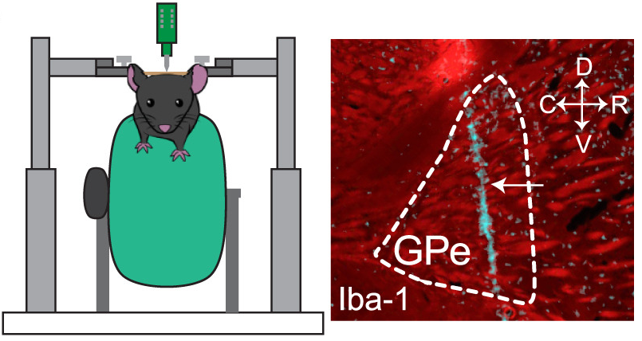
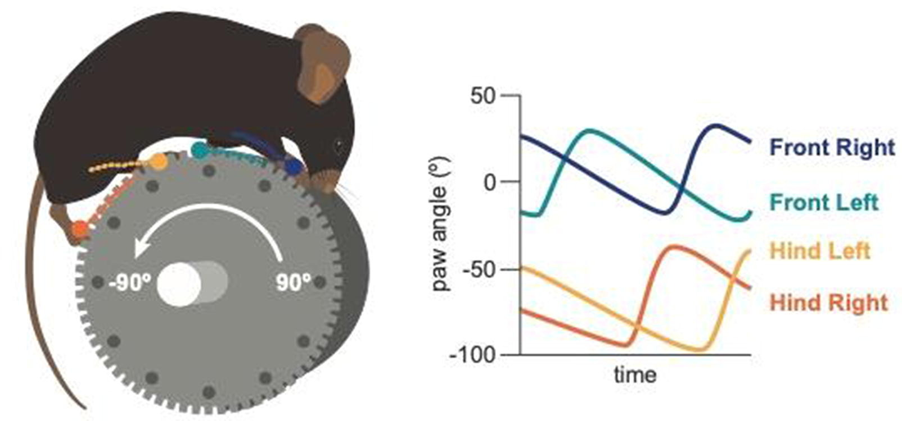
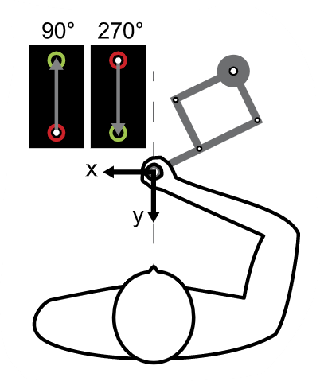
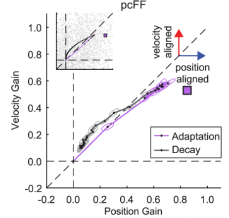
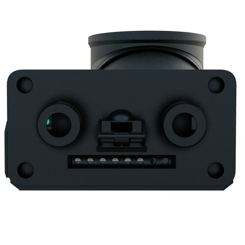

Highlights
-
“Cerebellar circuit computations for predictive motor control” [link] [pdf]
KP Nguyen and AL Person
Nature Reviews Neuroscience (2025)
Summary: Here we review evidence for and against the hypothesis that the cerebellum learns basic associative feedforward control policies to speed up motor control and learning. We contrast and link this feedforward control framework with another prominent set of theories proposing that the cerebellum computes internal models. Ultimately, we suggest that the cerebellum may implement control through mechanisms that resemble internal models but involve model-free implicit mappings of high-dimensional sensorimotor contexts to motor output.
-
“The indirect pathway of the basal ganglia promotes transient punishment but not motor suppression ” [link] [pdf]
BR Isett*, KP Nguyen*, JC Schwenk, JR Yurek, CN Snyder, MV Vounatsos, KA Adegbesan, U Ziausyte, AH Gittis
Neuron (2023)
Summary: Here, we examined how downstream pallidal targets of indirect pathway spiny neurons mediate motor and reinforcement. Surprisingly, our results suggest that the indirect pathway plays a more prominent role in negative reinforcement than in motor control.
-
“Distinct kinematic adjustments over multiple timescales accompany locomotor skill development in mice” [link] [pdf]
KP Nguyen, A Sharma, M Gil-Silva, AH Gittis*, SM Chase*
Neuroscience 466, 260-272 (2021)
Summary: We developed a behavioral task to track body and paw kinematics in mice as they learn to stay atop an accelerating wheel. We found that learning was accompanied by stereotypes progressions of paw kinematics that correlated with early, intermediate, and late states of performance.
-
“The 24-h savings of adaptation to novel movement dynamics initially reflects the recall of previous performance” [link] [pdf]
KP Nguyen, W Zhou, E McKenna, K Colucci-Chang, LC Bray, EA Hosseini, L Alhussein, WM Joiner
Journal of Neurophysiology 122(3), 933-946 (2019)
Summary: Here, we trained subjects on a task then asked them to come back the following day. After a 24-hour break, subjects recalled very little of what they learned before despite being given the same instructions and being in the same environment. Astonishingly, after only experiencing a single error like they saw before, we observed near total recall of the learned task.
-
“The decay of motor adaptation to novel movement dynamics reveals an asymmetry in the stability of motion state-dependent learning” [link] [pdf]
EA Hosseini, KP Nguyen, WM Joiner
PLoS Computational Biology 13(5) (2017)
Summary: Both simulation and behavioral results show that velocity-based learning decays at a slower rate than position-based learning, even when learning is significantly biased towards the latter at the end of training. Collectively, these results suggest that motion-state learning based on movement velocity is more stable than that based on limb position.
-
“Feeding Experimentation Device (FED): A flexible open-source device for measuring feeding behavior” [link] [pdf]
KP Nguyen, TJ O'Neal, OA Bolonduro, E White, AV Kravitz
Journal of Neuroscience Methods 267, 108-114 (2016)
Summary: FED is a low-cost, open-source, home cage-compatible feeding system that automatically quantifies feeding with high accuracy and temporal resolution. Learn more about FED and stay up-to-date here!
Complete Publications List
KP Nguyen and AL Person
Nature Reviews Neuroscience (2025)
BR Isett*, KP Nguyen*, JC Schwenk, JR Yurek, CN Snyder, MV Vounatsos, KA Adegbesan, U Ziausyte, AH Gittis
Neuron (2023)
KP Nguyen, A Sharma, M Gil-Silva, AH Gittis*, SM Chase*
Neuroscience 466, 260-272 (2021)
KP Nguyen, W Zhou, E McKenna, K Colucci-Chang, LC Bray, EA Hosseini, L Alhussein, WM Joiner
Journal of Neurophysiology 122(3), 933-946 (2019)
JA Licholai*, KP Nguyen*,WC Fobbs, CJ Schuster, MA Ali, AV Kravitz
Obesity 26(6), 1026-1033 (2018)